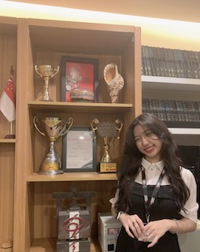

About me

Hello, I'm July, a Technology and Marketing enthusiast
I was born and raised in Gia Lai province, Vietnam. I aspire to study Information Technology at RMIT University with an emphasis in data analytics, and my career choice is to become a Data analyst.
| Title | Institution | Duration |
|---|---|---|
| Operation Coordinator | Personal Edge Programme x Enactus | Oct 2021 - Dec 2021 |
| Operation Core Member | Enactus Club (RMIT University) | Jun 2021 - Now |
| Marketing and Diplomacy Core Member | Mass Media Club | Jun 2021 - Sept 2021 |
Education and Awards
RMIT University, Vietnam
- Full Scholarship (Vice-chancellor's Scholar)
Bethany Christian School, Texas, US (10-12th grade)
- 3.98/4.0 GPA
- All Three Year Honor Rolls
- Nominated Student for Algebra 2, Geography, and Biology
Training and Certificates
University of Utah Summer Mathemtics Program
An intensive four-week program in number theory for motivated high school students led by Dr. Stefan Patrikis and graduate teacher assistants from the University of Utah.
- 120 hours of lecture, class discussions, and self-studying;
- coached participants on difficult concepts;
- received 3 college credit hours;
- familiarized with using the standard typesetting system Latex to write mathematics digitally
AT&T Summer Learning Externship
I acquired business acumen and personal growth through 80 hours of intensive online learning through AT&T Summer Learning Externship. I gained insights on:
- Business Leadership
- Workplace etiquettes
- Data Visualization
- Work Life Balance
- I engaged in a community of AT&T externship participants and expanded my network exponentially.
Data analysis and visualization; Mathematics
I have gained data visualization skills with Python;
- I'm familiarized with HTML and CSS;
- I completed the curriculum of precalculus and AP Calculus AB through dedicated self-studying outside of school over two years.